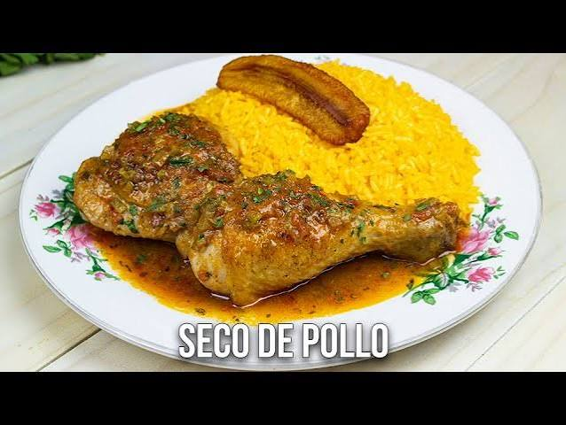

Coloca las presas de pollo en un recipiente y sazóno.Deja sofreir 3 minutos
Agregar el refrito con un poco de agua y deja cocinar por unos 7 minutos
INGREDIENTES PARA EL ARROZLavamos el arroz con abundante agua
En una olla agregamos agua sal y aceite,y ponemos a cocinar a fuego bajo por 20 minutos